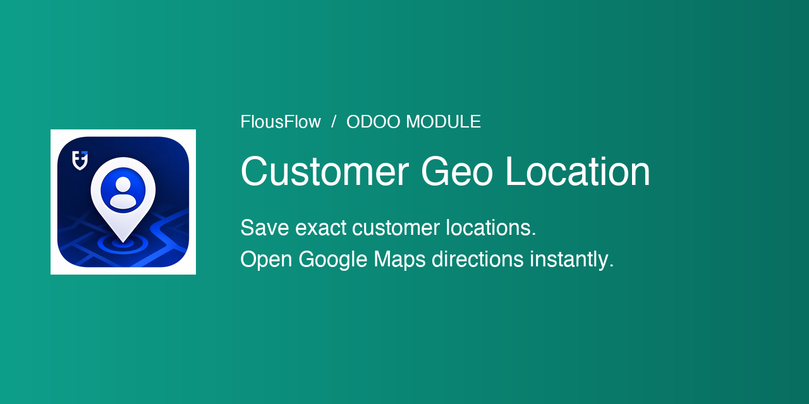
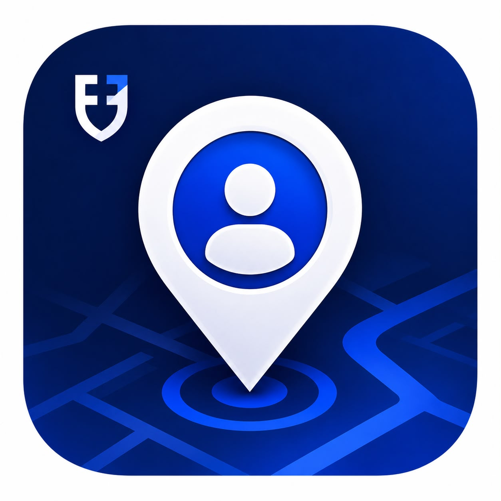
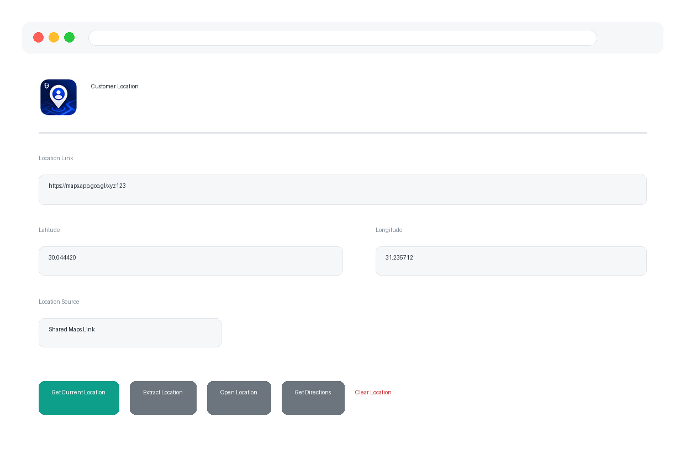

Save the exact geographic location of a customer / contact in Odoo 19 and reuse it instantly — open it in Google Maps or get turn-by-turn directions. No Google Maps API key required.
maps.app.goo.gl links).res.partner fields partner_latitude / partner_longitude.Open a contact → Customer Location page → Get Current Location (device GPS) or paste a shared link and click Extract Location. Then use Open Location / Get Directions to navigate.

Browser geolocation requires a secure context — serve Odoo over HTTPS in production.
Copy the flousflow_partner_location folder to your addons path and install
the module from the Apps menu.
LGPL-3 — FlousFlow